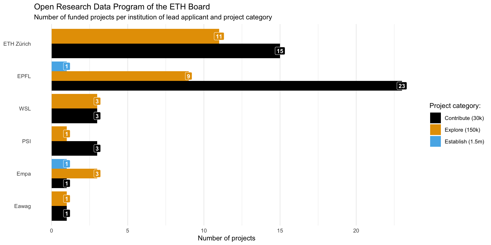

# Calculate total budgets by category
budget_summary <- application_budget |>
summarise(
Personnel = sum(total_budget_personnel_total_direct, na.rm = TRUE),
Travel = sum(total_budget_travel, na.rm = TRUE),
Equipment = sum(total_budget_equipment, na.rm = TRUE),
`Other Direct` = sum(total_budget_other_total_direct, na.rm = TRUE),
Subcontracting = sum(total_budget_subcontracting, na.rm = TRUE)
) |>
pivot_longer(cols = everything(),
names_to = "cost_category",
values_to = "total_chf") |>
filter(total_chf > 0) |>
mutate(percent = total_chf / sum(total_chf) * 100) |>
arrange(desc(total_chf))
# Display as formatted table
budget_summary |>
gt() |>
tab_header(
title = "ORD Program Budget Distribution",
subtitle = str_glue("Cost breakdown across {nrow(application_budget)} funded projects")
) |>
cols_label(
cost_category = "Cost Category",
total_chf = "Total (CHF)",
percent = "Percentage"
) |>
fmt_number(
columns = total_chf,
decimals = 0,
use_seps = TRUE
) |>
fmt_percent(
columns = percent,
decimals = 1,
scale_values = FALSE
) |>
tab_style(
style = list(
cell_text(weight = "bold")
),
locations = cells_column_labels()
) |>
tab_options(
table.font.size = px(14),
heading.title.font.size = px(18),
heading.subtitle.font.size = px(14)
)ethord
Publishing Open Metadata for Open Research Data Projects of the ETH Domain
Lars Schöbitz ![]()
Nicoló Massari
Prof. Elizabeth Tilley
January 15, 2026
ETH Domain Open Research Data (ORD) Program
{{< fa hand >}} Hands-up {{< fa hand >}}
Who has heard of the ETH Domain Open Research Data Program?
Measure 1: Calls for field specific actions
“The primary goal of the measure is to support ETH researchers to engage in, and develop ORD practices and to become ORD leaders in their fields”
Projects
15 mio CHF in funding 96 funded projects
Metadata
Metadata: ORD portal

Metadata: ORD portal
- Portal shows titles, abstracts, institutions, applicant names
- No structured bulk data or programmatic access
- Limited visibility of reports and outputs
- No systematic tracking of project outcomes

Distribution of Projects
Data from: Massari, Schöbitz, and Tilley (2025)
Metadata (not public)
Proposals & Reports & List of Outputs
- What is their scientific role (e.g. Professor, Post Doc, PhD, etc.)?
- How were budgets distributed among their cost categories?
- How many publications are derived from these projects?
- How many ORD datasets have been published?
- etc.
Limitation
- proposals, scientific reports, and lists of outputs are not available as
- open
- structured
- machine-readable
- data
The Real Limitation
- proposals, scientific reports, and lists of outputs are:
- confidential
- only available to EPFL Research Office
- protected as intellectual property by researchers
Consequences
- Limits discoverability and impact assessment
- Reviewers have privileged access while public cannot evaluate program effectiveness
- Contradicts goal of helping researchers become ORD leaders
Solution
- Ask all applicants for permission to extract metadata from project documentation
- We are experts in FAIR data sharing principles, so let’s do it!
- Publish FAIR-compliant, DOI-assigned metadata dataset
ethord R data package
ethord
- https://global-health-engineering.github.io/ethord/ (Massari, Schöbitz, and Tilley 2025)
- R data package with 11 datasets
- open source development (GitHub)
- permissive license (CC-BY)
- assigned DOI (Zenodo)
Resources: Key Datasets
Application Phase (6 datasets)
application_metadata- Core project info, timeline, budgetapplication_budget- Detailed budget breakdown by categoryapplication_ethics- Ethics considerations and flagsapplication_metadata_applicants- Co-applicant informationapplication_metadata_keywords- Research keywordsapplication_metadata_work_packages- Work package structure
Reporting Phase (3 datasets)
report_metadata- Project reports and updatesreport_output- Project outputs and user reachreport_metadata_coapplicants- Co-applicant contributions
Question: How is the budget distributed across cost categories?
Data from: Massari, Schöbitz, and Tilley (2025)
Question: How is the budget distributed across cost categories?
| ORD Program Budget Distribution | ||
| Cost breakdown across 78 funded projects | ||
| Cost Category | Total (CHF) | Percentage |
|---|---|---|
| Personnel | 6,701,489 | 83.6% |
| Other Direct | 689,569 | 8.6% |
| Equipment | 302,240 | 3.8% |
| Travel | 181,770 | 2.3% |
| Subcontracting | 143,000 | 1.8% |
Product: A public website
Future Possibilities
How could we make such administrative data “open by default” in the future?
Swiss Open by Default Policy Framework
Federal Foundation: Open Government Data Strategy 2019-2023 (Swiss Federal Council 2019) established “open by default” principle for all federal agencies
Legal Mandate: Federal Act EMBAG Article 10 (Swiss Federal Assembly 2024) legally requires open data publication unless restricted by privacy or security
Implementation: OGD Masterplan 2024-2027 (Federal Statistical Office 2024a) operationalizes through:
- Progressive data opening with documented exceptions
- Quality standards aligned with FAIR principles (Wilkinson et al. 2016)
- Centralized coordination via opendata.swiss (Federal Statistical Office 2024b)
- Standardized metadata using DCAT-AP CH (Federal Statistical Office 2023)
Thanks!
Slides at:
Slides created via revealjs and Quarto: https://quarto.org/docs/presentations/revealjs/
Data (Nicoló Massari) available at: Massari, Schöbitz, and Tilley (2025)
Access slides as PDF on GitHub
References
Federal Statistical Office. 2023. “DCAT Application Profile for Data Portals in Switzerland (DCAT-AP CH).” https://www.dcat-ap.ch/.
———. 2024a. “Open Government Data Masterplan 2024-2027.” https://www.bfs.admin.ch/bfs/en/home/services/ogd.html.
———. 2024b. “Opendata.swiss: Swiss Open Government Data Portal.” https://opendata.swiss/.
Massari, Nicolo, Lars Schöbitz, and Elizabeth Tilley. 2025. “Ethord: ETH Board Open Research Data (ORD) Program Project Metadata and Report Data.” https://doi.org/10.5281/zenodo.16563064.
Swiss Federal Assembly. 2024. Federal Act on the Use of Electronic Means for the Fulfilment of Government Tasks (EMBAG). https://www.fedlex.admin.ch/eli/cc/2023/682/en.
Swiss Federal Council. 2019. “Open Government Data Strategy Switzerland 2019-2023.” https://www.admin.ch/gov/en/start/documentation/media-releases.msg-id-74641.html.
Wilkinson, Mark D et al. 2016. “The FAIR Guiding Principles for Scientific Data Management and Stewardship.” Scientific Data. https://doi.org/10.1038/sdata.2016.18.